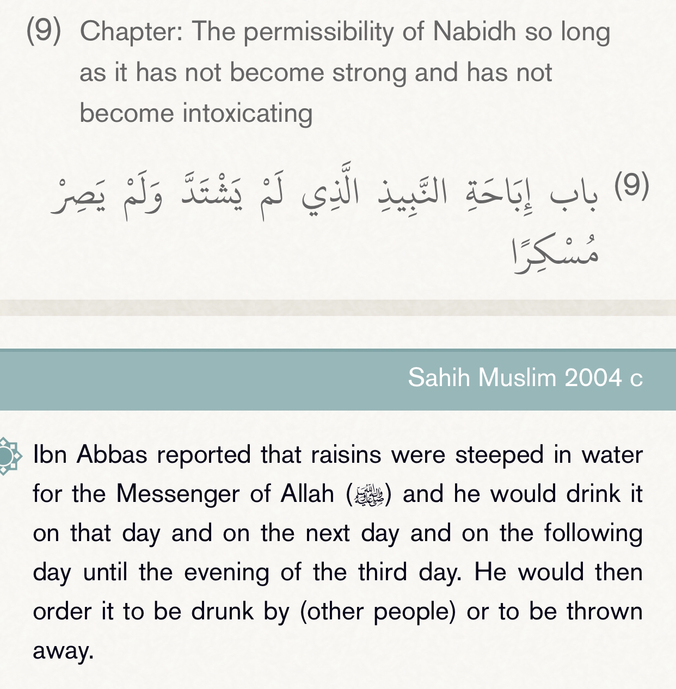
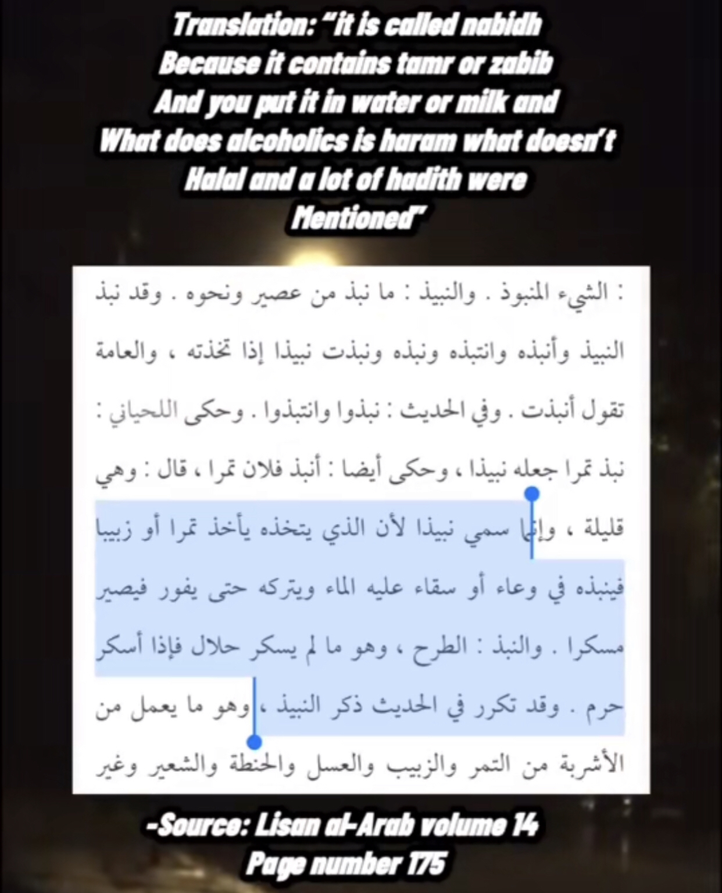

The word in question here is nabidh it means wine it can be alcoholic and non alcoholic did the prophet drink alcoholic ones


An-Nawawi (may Allah have mercy on him) said:
Nabeedh is water sweetened with raisins and the like, so that it has a pleasant taste, but it does not cause intoxication. But if it is steeped for too long and becomes intoxicating, it is haraam.
End quote from Sharh Saheeh Muslim (9/64)
And he (may Allah have mercy on him) said:
It is permissible to drink nabeedh so long as it is sweet and has not changed or fermented; this is permissible according to the consensus of the ummah.
End quote from Sharh Saheeh Muslim (13/174)
So no the prophet didn’t drink alcohol I challenge anyone to bring one authentic hadith where he drinks alcoholic wine